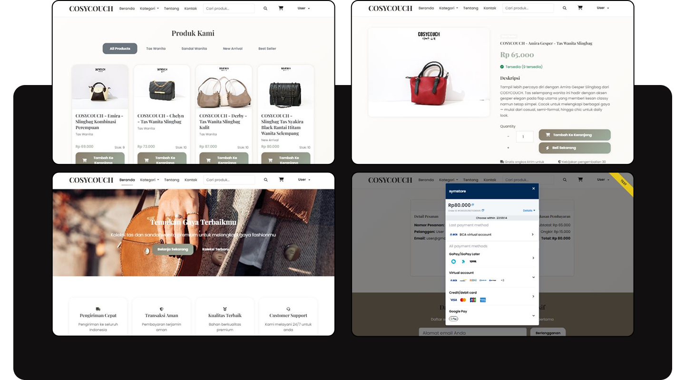
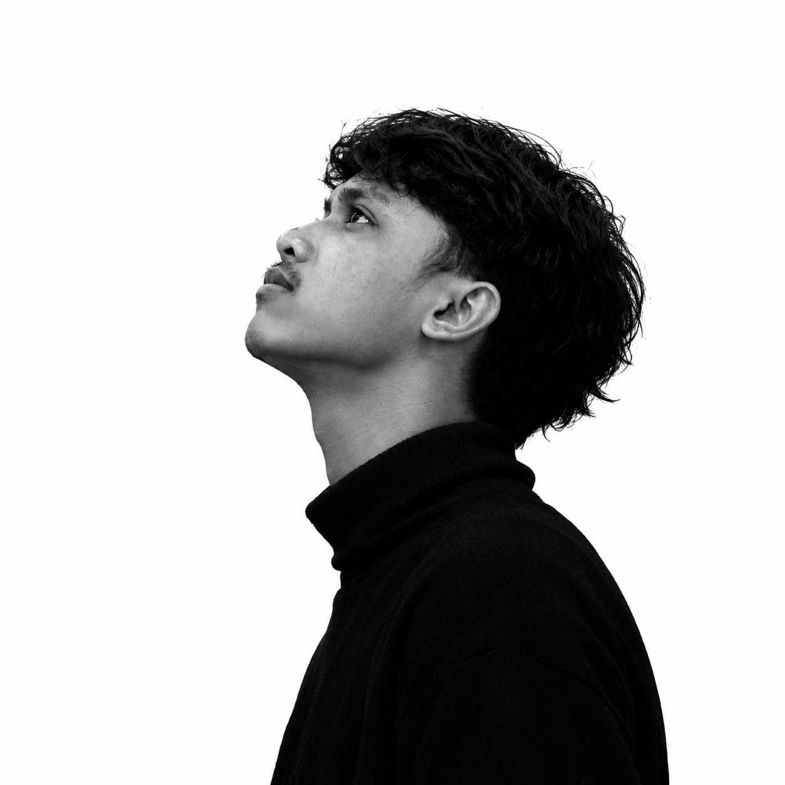

Software developer
Ciamis, Indonesia
Creative technologist
01 — Digital craft
Building
digital
experiences.
Software Developer | Informatics Engineering Graduate | Creative Technologist

02Approach
I build useful digital experiences with purpose.
I’m Enur Syamsi, an Informatics Engineering graduate from Universitas Perjuangan Tasikmalaya with a GPA of 3.81/4.00.
My experience spans full-stack web development, interactive game development, UI/UX design, and visual content creation. I’m interested in solving problems through technology while continuously improving my technical and creative skills.
03Expertise
Software first / creatively minded
From first thought
to final form.
01
Programming & web development
HTML, CSS, JavaScript, PHP, Laravel
02
Game development
Unity, C#, Python
03
Design
UI/UX design, graphic design
04
Creative production
CapCut video editing, product photography, graduation photography, photo editing
04Selected work
A few things
I’ve made.
Software and creative projects shaped by practical work, academic research, and visual collaboration.
05About / Education
Software first,
creative by nature.
I’m Enur Syamsi, an Informatics Engineering graduate from Universitas Perjuangan Tasikmalaya with a GPA of 3.81/4.00. My experience spans full-stack web development, interactive game development, UI/UX design, and visual content creation.
I’m interested in building useful, engaging, and well-designed digital experiences. Through academic projects, practical work, and creative collaborations, I’ve developed an interest in solving problems through technology while continuously improving my technical and creative skills.
ExperienceGraphic Designer — Vocational High School Internship (PKL)
Full-Stack Developer — University Practical Work, Semester 6
Game Developer — Final Academic ProjectSoftware development with complementary design and visual production
Full-Stack Developer — University Practical Work, Semester 6
Game Developer — Final Academic ProjectSoftware development with complementary design and visual production
EducationUniversitas Perjuangan Tasikmalaya
Informatics EngineeringGraduation 2026 · GPA 3.81/4.00
Informatics EngineeringGraduation 2026 · GPA 3.81/4.00